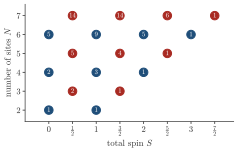

Advanced Quantum Materials 2027 · All lectures · Lecture notes
Session 8. Quantum Magnetism, Spinons and Kondo Physics
8.1 Two classes of magnets and where we find them
In the language of this lecture, every magnetic material belongs to one of two classes. Classical magnets break time-reversal symmetry, and examples are conventional ferromagnets, antiferromagnets and spin spirals. For the electrons, these magnets can be described with mean-field theory, in the same way as we did in Sessions 1 and 6. Most magnetic materials in nature are of this type, for example iron, copper oxide, or any material with a well-defined Néel temperature.
Quantum magnets are the opposite case. They cannot be described with mean-field theory in terms of electrons, and their ground states have long-range entanglement. This entanglement is not a small detail, since it gives rise to excitations that do not exist in a symmetry-broken magnet. In this session we will study two physical realizations of quantum magnetism, which are quite different from each other.
Quantum spin liquids (QSLs), which are the first class that we build in detail. The best-known candidate material is herbertsmithite, a compound where the magnetic ions form a kagome lattice of spin-\(1/2\) sites.
Heavy-fermion Kondo insulators, which are often rare-earth compounds, and the standard example is samarium hexaboride (SmB\(_6\)). We build the theory for this class in the second half of the session.
8.2 Two emergent excitations, magnons and spinons
The strong many-body interactions between electrons are the origin of the emergent collective excitations of magnetic materials. In a symmetry-broken magnet, this collective excitation is the magnon, which has spin \(1\) and no charge. The reason is that the strong repulsion between electrons freezes the charge degree of freedom completely, so only the spin can fluctuate. In a quantum magnet, the excitation is of a different kind. It is the spinon, which has spin \(1/2\) and also no charge. It is useful to think of a spinon as the spin half of an electron. If we take this picture one step further, we obtain the standard language of fractionalization for a QSL, where the electron splits into a chargon, which has the charge, and a spinon, which has the spin.
There is a simple argument with pictures that shows why the spin of the two excitations differs by exactly a factor of two. Let us take a ferromagnet, where the ground state has all spins up, \(|{\uparrow\uparrow\uparrow\cdots}\rangle\). If we flip one spin to build an excited state, the total spin of the excited state differs from the one of the ground state by \(\Delta S = 1\), and this is a local magnon. Let us now take a quantum spin liquid, where the ground state is a collection of singlets everywhere and no spin points in a specific direction. If we build an excited state by leaving one spin without a partner, instead of putting it in a singlet, the difference in total spin is \(\Delta S = 1/2\), and in this picture this is a spinon. This picture is too simple on purpose, since real spinons are more subtle than “an unpaired spin,” but it is the right first intuition for why symmetry-broken magnets and quantum spin liquids have fundamentally different excitations. Figure 8.1 shows the two counting arguments next to each other.

A quantum spin liquid has an even number of spin-1/2 sites, and its ground state has \(S_\text{tot}=0\). Can the lowest excited state contain a single spinon?
Show the answers
- A. ✓ True
This is true. The total spin of an even number of spin-1/2 particles is an integer. A spinon with \(S=1/2\) must then come together with a second one, and this is why spinons are created in pairs.
- B. ✗ False
This is false. Take four spin-1/2 sites. The total spin can be \(0\), \(1\) or \(2\) and never \(1/2\), so the state with one spinon does not exist.

The total spins that \(N\) spin-\(1/2\) sites can have, with the number of times each one appears, checked against \(\mathbf S^2\) for \(N\le7\). Even \(N\) gives an integer spin and odd \(N\) gives a half-integer spin. - C. ✗ False
This is false. A field changes the energies but not the possible values of the total spin. With four sites in a field, \(S^z_\text{tot}\) is still an integer, from \(-2\) to \(2\).
A magnon has spin \(1\). What does this tell us about its relation to spinons?
Show the answers
- A. ✗ False
This is false. A spinon has spin \(1/2\), since it is created by a single \(f^\dagger_\alpha\) that changes \(S^z\) by \(1/2\). A single spinon cannot have spin \(1\).
- B. ✓ True
This is true. Two spin-1/2 excitations can add up to spin \(1\), as in the triplet of the dimer. The magnon of a symmetry-broken magnet is then the bound version of what a quantum spin liquid can split into two free parts.
- C. ✗ False
This is false. In the parton construction \(\mathbf S_i=\tfrac12 f^\dagger\boldsymbol\sigma f\), so each \(f\) fermion carries spin \(1/2\). Spinons are neutral but they are not spinless.